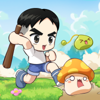

MAPLE SPEC LAB
스펙 분석부터 변경 결과까지,
한 번에.
OCR 또는 직접 입력으로 현재 스펙을 등록하고
장비·어빌·동료 변경 결과를 바로 비교해보세요.
개인의 호기심으로 시작한 프로젝트입니다.

MAPLE SPEC LAB
메이플 키우기 연구소
MAPLE SPEC LAB
OCR 또는 직접 입력으로 현재 스펙을 등록하고
장비·어빌·동료 변경 결과를 바로 비교해보세요.
개인의 호기심으로 시작한 프로젝트입니다.
현재 스펙과 변경값을 분리해 계산합니다.
수많은 경우 중 더 나은 선택을 찾아줍니다.
변경 전후 스펙과 피해 변화를 한눈에 확인합니다.
이미지와 입력값은 현재 기기 안에서 처리됩니다.
LOCAL IMAGE INPUT
업로드된 이미지는 서버로 전송하지 않고 현재 브라우저 안에서만 처리합니다.
PC에서는 드래그앤드롭 또는 파일 선택, 모바일에서는 사진첩·파일 선택을 이용하세요.
PC에서는 캡처 후 이 영역을 누르고 Ctrl+V. 모바일은 브라우저가 이미지 붙여넣기를 지원하는 경우 사용할 수 있습니다.
모바일 브라우저에서는 사진첩 선택 방식이 가장 안정적입니다.
스펙창, 장비 비교창, 어빌리티 화면을 여러 장 추가할 수 있습니다.
아직 가져온 이미지가 없습니다.
자동 인식 결과는 적용 전에 직접 확인하고 수정할 수 있습니다.
BASE PROFILE
OCR 적용 후 틀린 값만 수정하거나 직접 입력할 수 있습니다.
CURRENT DAMAGE
입력된 현재 스펙만 적용한 실시간 기준값입니다.
현재 스펙을 입력하면 분석 결과가 표시됩니다.
CURRENT BASELINE
현재 스펙에 이미 반영된 7명입니다. 추천 시 이 조합과의 차이만 계산합니다.
이미지 OCR을 사용하지 않아도 아래 모든 항목을 직접 입력할 수 있습니다. OCR을 사용한 경우에도 인식된 값을 자유롭게 수정할 수 있습니다.
WHAT-IF SIMULATION
A에서 B로 바뀌는 옵션을 입력하면 현재 스펙에 미치는 영향을 단계별로 보여줍니다.
EQUIPMENT OCR
현재 장비 A와 교체할 장비 B를 각각 넣습니다. OCR 결과는 직접 수정한 뒤 변경 목록에 적용할 수 있습니다.
ABILITY OCR
현재 어빌과 변경할 어빌 이미지를 각각 넣어 옵션 총합 차이를 계산합니다.
동료 DB 탭에서 선택한 조합을 변경 목록에 적용합니다.
현재 스펙에 반영될 실제 옵션 변화입니다.
| 출처 | 항목 | 변경 전 A | 변경 후 B | 실제 변화량 |
|---|
변경 목록을 기준으로 즉시 계산한 미리보기입니다.
| 항목 | 현재 | 변경 후 | 차이 |
|---|
CURRENT & COMPARISON REPORT
현재 스펙의 최종 피해 지수를 먼저 확인한 뒤 변경 전후 효율을 비교합니다.
CURRENT STATE
현재 입력된 스펙만 적용한 기준값입니다.
현재 스펙을 입력하면 분석 결과가 표시됩니다.
| 항목 | 변경 전 | 변경 후 | 변화량 |
|---|
| 옵션 | 단독 영향 |
|---|
변경값을 추가하고 비교 실행을 눌러주세요.
COMPANION INVENTORY & OPTIMIZER
메인 1명과 서브 6명은 장착 효과 계산상 동일하게 보고 총 7개 조합을 추천합니다.
SCREENSHOT IMPORT
에픽·유니크·레전드 목록 이미지를 넣으면 보유 여부와 레벨 후보를 추출합니다.
CURRENT EQUIPPED BASELINE
현재 스펙에 이미 포함된 비교 기준입니다. 동료를 선택해도 능력치가 다시 더해지지 않으며, 추천 조합과의 차이만 계산합니다.
7-SLOT OPTIMIZER
현재 사용 중인 7명을 기준으로, 필수 고정 동료를 유지하면서 더 나은 조합을 찾습니다.
원하는 능력치를 최대 3개까지 선택하고 합계 100%로 설정하세요. 카테고리를 바꾸면 권장값이 자동 입력됩니다.
현재 기준 7명과 추천 조합의 차이만 변경 목록에 반영됩니다.
USER GUIDE
연구소의 전체 흐름을 순서대로 따라가면 현재 스펙 등록부터 결과 분석까지 완료할 수 있습니다.
스탯창 이미지를 올려 OCR을 실행하거나 현재 스펙 메뉴에서 직접 입력합니다. OCR 결과는 적용 전에 반드시 검토하고 수정할 수 있습니다.
현재 장비 A와 변경 장비 B를 입력합니다. 1-3번은 주옵션, 4-7번은 부옵션이며 실제 변화량은 B에서 A를 뺀 값입니다.
A와 B를 각각 최대 7줄로 입력합니다. 열리지 않았거나 존재하지 않는 슬롯은 (없음)으로 두면 계산에서 제외됩니다.
현재 장착 7명은 현재 스펙에 이미 반영된 기준입니다. 추천 조합과 현재 조합의 차이만 최종 스펙에 반영됩니다.
현재 스펙, 변화량, 적용 후 스펙, 피해 변화 순서로 확인합니다. 결과 화면에서는 주요 증가와 감소 원인도 함께 확인할 수 있습니다.
입력값은 자동으로 복원되지 않습니다. 다시 사용할 데이터는 상단의 프로필 저장으로 JSON 백업을 만든 뒤 직접 불러오세요.
스펙 및 피해량 계산식은 최종뎀 계산기 Beta 2.0을 토대로 제작되었습니다.
BUG REPORT
아래 내용을 작성하면 MapleSpecLab GitHub Issue 작성 화면이 열립니다. 전송 전 미리보기에서 포함 내용을 확인할 수 있습니다.
이름, 이메일, 전화번호, IP 주소, 위치, 로그인 정보, 방문 기록, 게임 계정 정보는 수집하지 않습니다. 원본 이미지도 자동으로 전송되지 않습니다.
포함 가능: 연구소 버전, 브라우저 종류, 화면 크기, 현재 스펙, 변경 목록, 동료 설정
자동 포함 안 됨: 원본 이미지, 이름, 이메일, 전화번호, IP 주소, 위치, 로그인 정보, 게임 계정 정보
스크린샷은 GitHub Issue 화면이 열린 뒤 직접 첨부합니다. 채팅, 알림, 계정명 등 개인정보가 보이지 않는지 먼저 확인해 주세요.
보내주신 내용은 오류를 재현하고 연구소를 개선하는 데 큰 도움이 됩니다.
ABOUT MAPLE SPEC LAB
프로젝트의 성격, 계산식 출처, 버전 및 개인정보 처리 원칙을 확인할 수 있습니다.
이 연구소는 개인의 호기심으로 시작한 개인 프로젝트입니다.
개인의 사정이나 변덕에 따라 연구소가 삭제되거나 추가 업데이트가 중단될 수 있습니다.
스펙 및 피해량 계산식은 최종뎀 계산기 Beta 2.0을 토대로 제작되었습니다.
일부 기능과 계산 방식은 MapleSpecLab의 목적에 맞게 수정 및 확장되었습니다. 원 계산기와 MapleSpecLab은 별개의 프로젝트입니다.
연구소는 이름, 이메일, 전화번호, IP 주소, 위치, 로그인 정보, 게임 계정 정보 등을 자동 수집하지 않습니다.
오류 제보 시에는 사용자가 직접 작성하거나 선택한 정보만 GitHub Issue 작성 화면으로 전달됩니다.